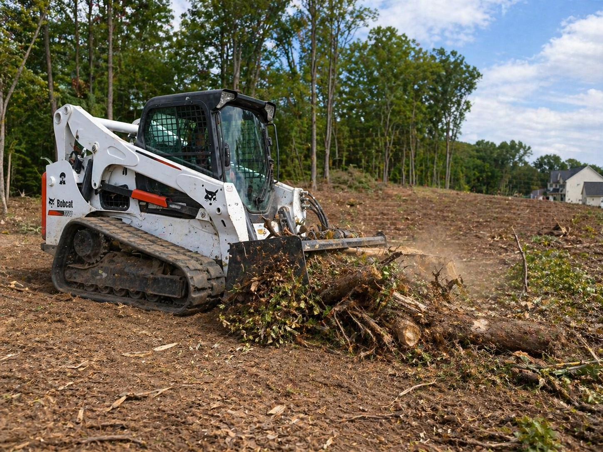

Land Clearing Services in Statesboro, GA
If you’re preparing land for a new build or need to reclaim overgrown property, our land clearing services in Statesboro, GA are built to get your site ready quickly and efficiently.
We handle everything from light brush removal to full lot clearing, making sure your property is clean, accessible, and ready for the next phase of construction.
Whether you’re building a home, installing a driveway, or just want usable land again, we clear it the right way without tearing up the ground unnecessarily.
Our land clearing services include:
- Brush and small tree removal
- Lot clearing for new construction
- Overgrown property cleanup
- Stump removal and debris hauling
- Site prep for grading and building
We understand local terrain and soil conditions in the Statesboro area, which allows us to clear land efficiently while minimizing disruption to the surrounding property.
Learn more about land clearing